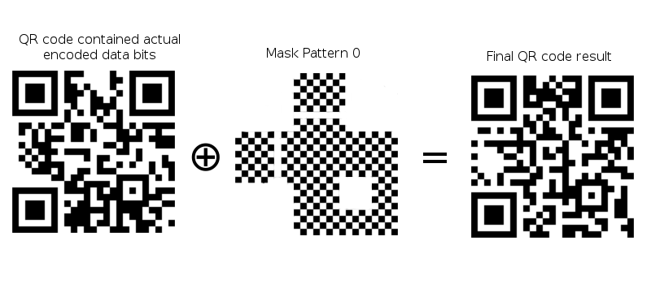

QRazyBox Help

QR code (abbreviated from Quick Response Code) is the trademark for a type of matrix barcode (or two-dimensional barcode) first designed for the automotive industry in Japan. A QR code uses four standardized encoding modes (numeric, alphanumeric, byte/binary, and kanji) to efficiently store data. (Wikipedia)
The QR code format was created in 1994 by Japanese company Denso-Wave, which is a subsidiary of Toyota that manufactures auto components. The standard is defined in ISO/IEC 18004:2006. The use of QR codes is license-free. (thonky.org)
Keep in mind, that in this section, we'll only discuss a summary about QR Code standards. If you want to learn QR Code in detail, you can visit a page that I recommend you before in previous section.
The size of QR Code is called version. Version of QR Code range from version 1 (21x21 pixels) up to version 40 (177x177 pixels). These versions is defined by how much data that stored in the QR Code. So, the larger the data stored, the larger the version will be.
*Pixel in QR Code is often also called Module.
QR Code also has error correction feature, that will automatically restore the data if some of them are damaged or unreadable. This error correction scheme use Reed-Solomon Error Correction algorithm that consists of 4 correction levels: Low (L), Medium (M), Quartile (Q), and High (H), where each of the level has its own capability of how much the data can be restored.
| Error-Correction Level | % of data that can be restored |
|---|---|
| Level L | ± 7% |
| Level M | ± 15% |
| Level Q | ± 25% |
| Level H | ± 30% |
(The table above show the capabilty of each Error-Correction level)
QR Code always consist of three things, Function pattern, Format & Version Information Pattern, and Data Bits.
Function Pattern is a non-data element of the QR Code that is required by the QR Code specification.
Format & Version Information Pattern are pattern that describe current specification that being used by QR Code such as Version, Error correction level, and Mask Pattern. And Data Bits itself is an actual data that encoded in the QR Code.
Function pattern often also called Fixed Pattern because their form never changed, but only their position that will change depending on the QR Code version.
(The image above explains about QR Code structure)
As explained in previous part, Format and Version Information are patterns in QR Code that tell about current specification that being used by QR code. Format information is always exist in every version of QR code, but Version information only exist in version 7 or above.
Format information consist of 15 bits data that store information about error correction and mask pattern that being used by QR code.
Thereafter, Version information consist of 18 bits data that store information about QR code version.
Because until now, QRazyBox only support up to version 6 QR code, so we will ignore about version information for now.

(The image above explain about how Format information store error correction level and mask pattern)
The placement of these pattern are shared into 3 places (for Format info) and 2 places (for Version info). Those placement can be see in the image in the previous part that explains QR code structure.
We will discuss about Mask Pattern in the last part of this section.
Data bits is sequence of modules that contained blocks of encoded message and blocks of reed-solomon that will be used as error corrector later. The encoded message itself, is arranged from: Mode Indicator, Character Count Indicator, and main message itself.
Mode indicator is encoding mode codeword (4 bits) that being used to encode the message to binary form. As explained before that QR code has 4 modes for encodes text: Numeric, Alphanumeric, Byte, and Kanji.
Character count indicator is a number that tell the length of message.
It is possible to use multiple modes in a single QR code by including the mode indicator before each section of bytes that uses that mode.
Data bits are placed in QR code from right to left in a zigzag pattern and form a snake flow.
The order is : Mode Indicator ⇒ Character Count Indicator ⇒ Main message ⇒ Error correction (reed-solomon block)
(Example of data bits placement process, encoding text "www.wikipedia.org")
But, pay attention that for larger QR code, data blocks must be interleaved and broken into smaller blocks according to the version and error correction level that being used. The Image below explain process of placing interleaved data blocks.
Before QR code is finally generated, the data bits must be XOR-ed with mask pattern. There are 8 mask pattern that available in QR code, namely mask pattern 0 to 7 (or 000 to 111 in binary). This process have a purpose of making QR code more readable by QR scanner.
(Eight mask patterns)
(The process of data masking)
https://en.wikipedia.org/wiki/QR_code